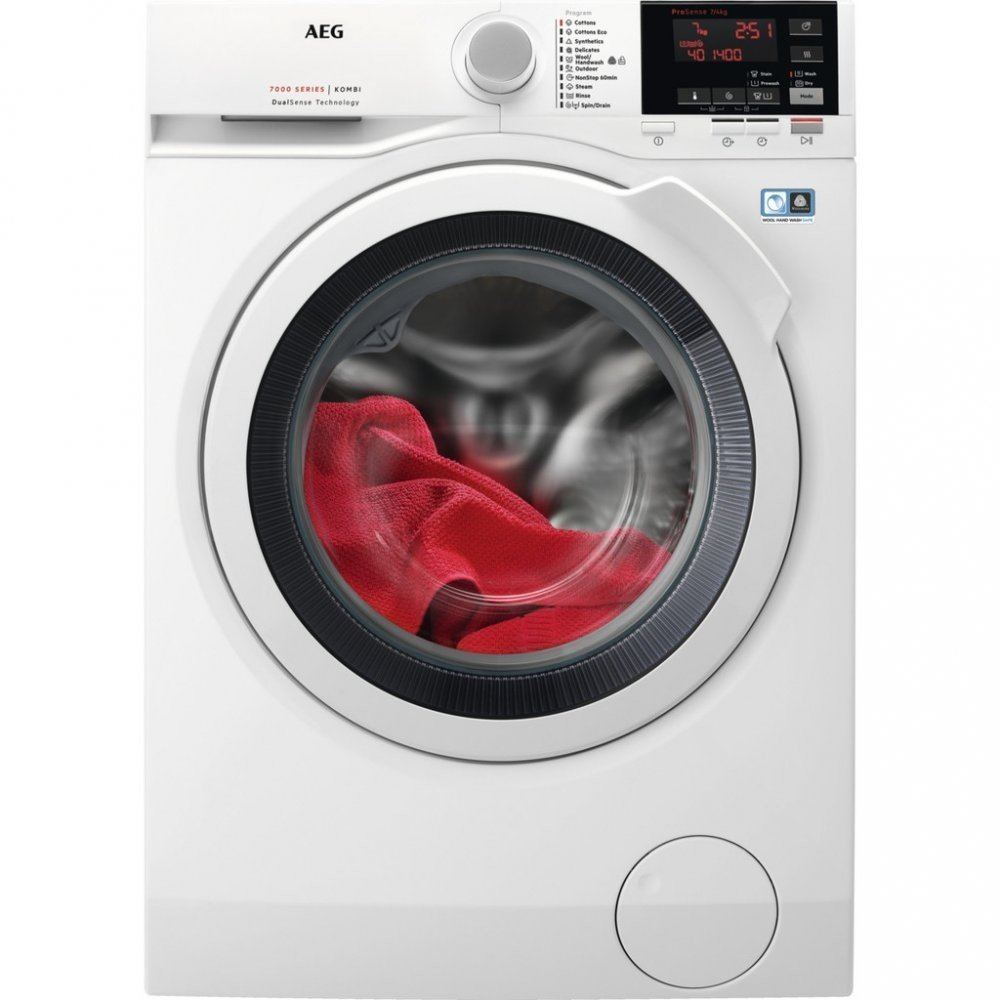
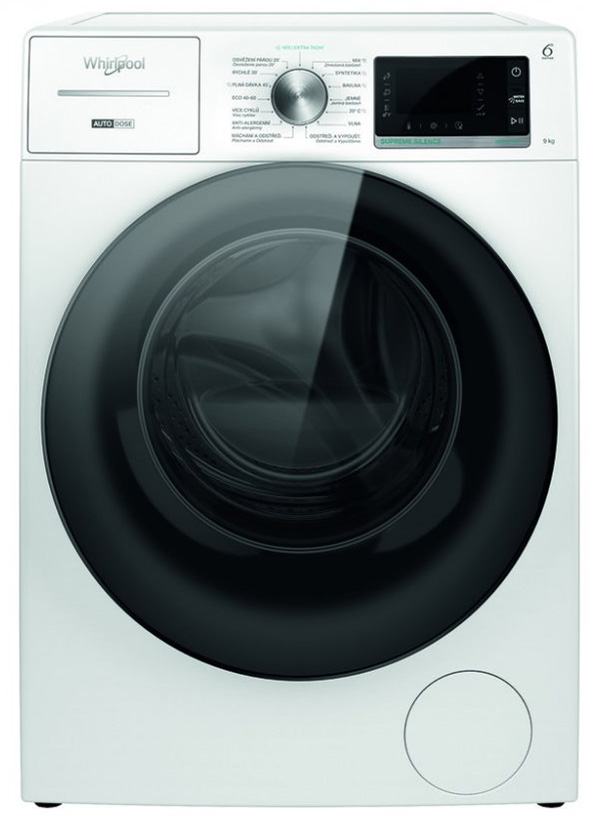
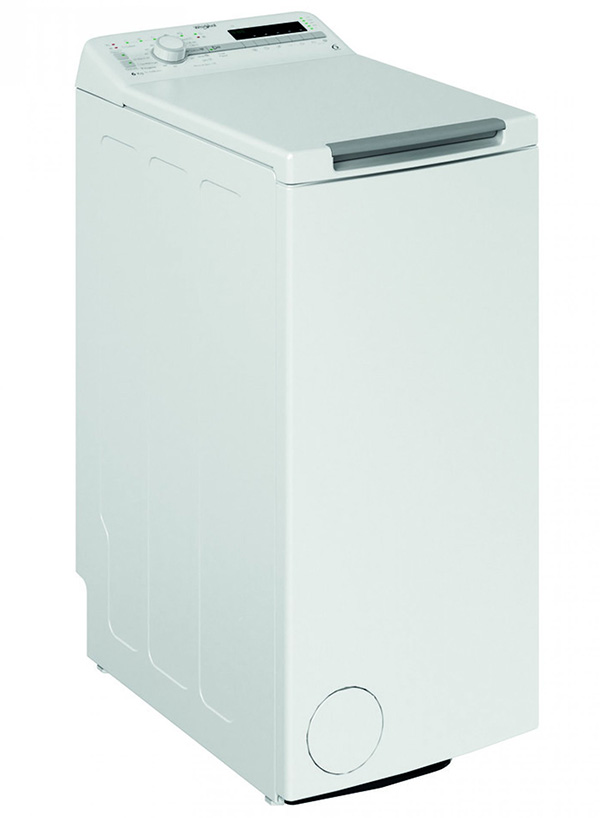
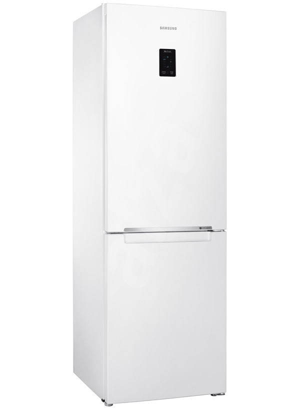
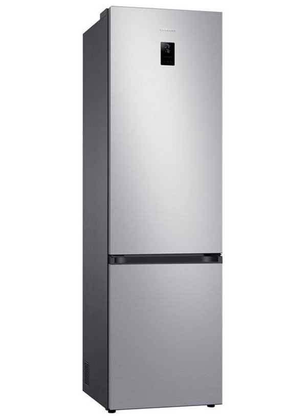

AEG Dualsense L7WBG47W
- Popis:
- Skvelá kombinácia výkonnej práčky a šetrnej sušičky v jednom prístroji. Inteligentné technológie sa postarajú o dokonalý výsledok každého pracieho aj sušiaceho cyklu vďaka detekcii náplne, programom na takmer každý druh bielizne či parnému programu, zabraňujúcemu pokrčeniu. Prednosťou je expresný program, s ktorým za 60 minút budete mať vypraté aj usušené.
- Hlavné charakteristiky:
- Výrobca: AEG
- Spôsob plnenia: predné
- Spôsob umiestnenia: voľne stojace
- Maximálna náplň práčky: 7 kg
- Maximálna náplň sušičky: 4 kg
- Hlučnosť pri praní:51 dB
- Počet otáčok:1400 ot./min
- Hmotnosť brutto: 74 kg
- Farba: biela
- Vstavaná: nie
- Energetické údaje:
- Energetická trieda: C
- Príkon: 2200 W
- Spotreba vody: 45 l
- Energetická trieda účinnosti prania a sušenia: E
Špecifikácie:
Cena:
599,00 € 429,99 €

Whirlpool W8 W946WB CS
- Popis:
- S touto pračkou od firmy Whirlpool zažijete pranie prádla prvej triedy. Rýchlosť bubna pri odstreďovaní slušných 1400 otáčok za minútu a na jeden cyklus práce pojme až 9 kg prádla. Vyniká technológiou praní, ktorá udrží bielizeň v pračke čerstvo až 6 hodín po skončení cyklu, automatickým dávkovaním pracovného prostriedku, dezinfekcie a sviežestí pomocou horúcich párov, možno doplniť bielizeň aj počas prania a spoznáte ďalšími technickými funkciami.
- Hlavné charakteristiky:
- Výrobca: Whirlpool
- Spôsob plnenia: predné
- Spôsob umiestnenia: voľne stojace
- Maximálna náplň práčky: 9 kg
- Hlučnosť pri praní:71 dB
- Počet otáčok:1400 ot./min
- Hmotnosť brutto: 87 kg
- Farba: biela
- Vstavaná: nie
- Energetické údaje:
- Energetická trieda: A
- Spotreba energie pracieho cyklu na 100 cyklov: 49 kWh
- Spotreba vody: 64 l
- Trieda emisie hluku: A
Špecifikácie:
Cena:
699,00 €

Whirlpool TDLR 6230SS
- Popis:
- Whirlpool TDLR 6230SS EU/N je zhora plnená práčka v energetickej triede A+++ elektronická, technológia 6.ZMYSEL kapacita 6 kg, 1200 ot./min. Technológia 6.ZMYSEL rozpozná veľkosť náplne prostredníctvom nasiakavosti bielizne a automaticky nastaví zdroje, neustále monitoruje prací cyklus a zabezpečuje optimálny výkon, pričom ušetrí až 50 % energie, vody a času.
- Hlavné charakteristiky:
- Výrobca: Whirlpool
- Spôsob plnenia: horné
- Spôsob umiestnenia: voľne stojace
- Maximálna náplň práčky: 6 kg
- Hlučnosť pri praní:59 dB
- Počet otáčok:1200 ot./min
- Hmotnosť brutto: 58 kg
- Farba: biela
- Vstavaná: nie
- Energetické údaje:
- Energetická trieda: A+++
- Spotreba energie pracieho cyklu na 100 cyklov: 64 kWh
- Spotreba vody: 43 l
- Trieda emisie hluku: B
Špecifikácie:
Cena:
270,60 €

Samsung RB30J3215WW
- Popis:
- Kvalitné podmienky vo vnútri chladničky dokážu výrazne predĺžiť dobu, počas ktorej potraviny zostávajú čerstvé a chutné. Logicky rozdelený vnútorný priestor ponúka dostatok miesta pre jednotlivé typy jedla a zároveň zaistí rovnomerné ochladzovanie a konštantnú teplotu. Pre mäso a čerstvé ryby je k dispozícii špeciálna zásuvka, ktorá udržuje ideálnu teplotu okolo nuly. Prehľad o náplni chladničky zaistí LED osvetlenie. Potraviny budete mať na dosah ruky vďaka vysúvacím poličkám, takže ľahko dosiahnete aj do zadných častí chladničky. Aj v mrazničke nájdete zásuvku, ktorá sa dá celá otvoriť, čo výrazne uľahčí manipuláciu s mrazenými potravinami. Nízku spotrebu zaistí kompresor, ktorý prispôsobuje výkon momentálnym potrebám. Váš čas a spotrebované energie ušetrí aj beznámrazová technológia.
- Hlavné charakteristiky:
- Výrobca: Samsung
- Spôsob umiestnenia: voľne stojace
- Počet kompresorov: 1 ks
- Hlučnosť:37 dB
- Zameniteľné otváranie dvierok:áno
- Mraznička: áno
- Prevedenie: kombinované
- Čistý objem chladničky: 213 l
- Energetické údaje:
- Energetická trieda: E
- Spotreba za 24 hodín: 0.68 kWh
- Spotreba energie za rok: 249 kWh
- Akumulačná doba: 18 h
- Trieda emisia hluku: C
Špecifikácie:
Cena:
376,50 €

Samsung RB38T672CSA
- Popis:
- Uložte ešte viac potravín do extra veľkej 385 litrovej* chladničky so štandardným dizajnom s hĺbkou 600 mm, ktorá bude elegantne ladiť s okolitým vybavením. Vďaka vysoko účinnej izolácii technológie SpaceMax™ sú jej steny oveľa tenšie. Vytvára tak viac úložného priestoru bez toho, aby vyčnievala z pracovnej plochy.
- Hlavné charakteristiky:
- Výrobca: Samsung
- Spôsob umiestnenia: voľne stojace
- Hlučnosť:35 dB
- Zameniteľné otváranie dvierok:áno
- Mraznička: áno
- Prevedenie: kombinované
- Čistý objem chladničky: 276 l
- Energetické údaje:
- Energetická trieda: C
- Spotreba za 24 hodín: 0.463014 kWh
- Spotreba energie za rok: 169 kWh
- Akumulačná doba: 18 h
- Trieda emisia hluku: B
Špecifikácie:
Cena:
249,00 €

© 2022 Roman Radvanskyi